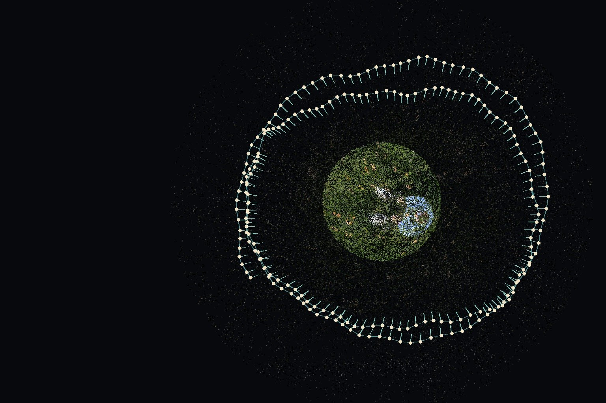
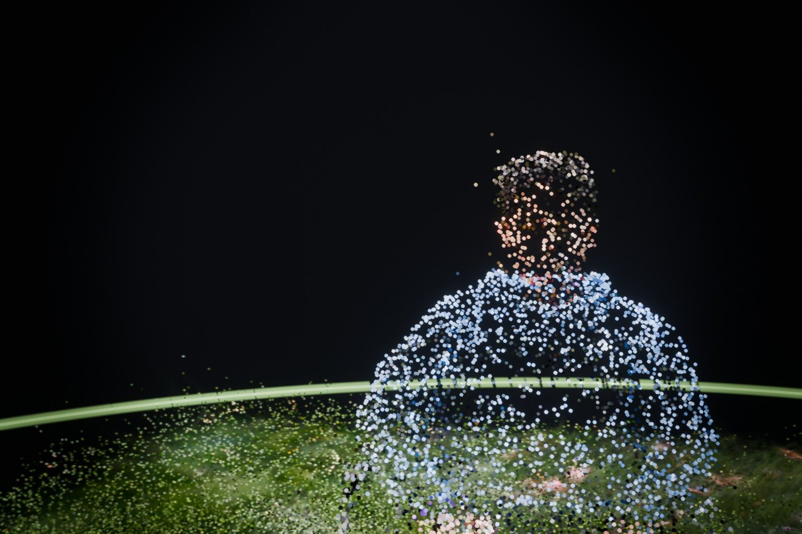

My son Abdel stood still (mostly) while I walked circles around him with my camera. 212 photos later, he was a 3D scene I could fly a camera through.
I've been curious about Gaussian splatting since the original paper came out in August 2023.13D Gaussian Splatting for Real-Time Radiance Field Rendering, by Bernhard Kerbl, Georgios Kopanas, Thomas Leimkühler and George Drettakis, presented at SIGGRAPH 2023. A team at Inria in France showed you could turn a set of ordinary photos into a 3D scene that renders in real time. It made waves, and I always assumed it was a little too far outside my skill set. Lately it keeps showing up in my Instagram feed, and that got me curious enough to try.
Here's the short version of what it is. Instead of building a surface out of triangles, splatting fills the space with millions of soft, colored blobs (the splats) that blend into an image from any angle. It looks like a photograph you can walk around in.
Even with a scan that went wrong
What surprised me most was how good it turned out, even with a scan that went wrong in several ways. I didn't make enough passes around him, and Abdel moved more than the software would like. The processing took a little time and some work in Terminal, but it was a relatively easy process to follow.
Now I want to experiment with depth of field, lensing and lighting.
It all felt like photography
I never lost ownership of the process. I chose the subject, I took the photos, I processed them, and I edited the video into the reel above. AI taught me the process and pointed me toward the right applications, but I picked up a whole new workflow in a day.
Here's how it went, step by step.
Shoot. Walk circles around your subject with lots of overlap between frames. The subject has to hold still, because the software assumes nothing in the scene moved. Frames where Abdel moved or turned his head got flagged and pulled.
Solve. Software called COLMAP works out where the camera was for every single frame. It kept crashing on my Mac, so Claude ran it in the cloud and sent the camera positions back. The check is a plot of the camera ring: if it looks like a circle around the subject, it worked.

Train. I loaded everything into Brush, a free app, and let it run 30,000 steps. It starts as fog and slowly sharpens into a person.
Clean. In SuperSplat, a free browser tool, I drew a sphere around Abdel and deleted everything outside it.
Direct. In Blender, we leveled the ground, centered Abdel and graded the scene the way I'd grade a photo: contrast, a little bloom, a vignette, some grain. Then came camera moves timed to the beat of the music, and a shot where he builds up out of dots.

Maybe it's time to shop around for a new computer?
Processing time was the hardest part. I had to do a relatively low resolution pass to share it out today. Much larger and it would have killed my laptop.
If you'd like to help me get there, you can buy me a coffee on Ko-fi or chip in on Substack.
The first cut of the reel also put the headline right across Abdel's face. Lesson learned: plan where the words go before you plan the camera moves.
Sidequest for sure
This connects to Midlife Survivors more than it might look. Part of surviving my own midlife is finding ways to keep my creativity and my passion for image making and storytelling going. I've always wanted to explore 3D animation, and this is me dipping my toes in.
My friend Kevin and I are working on turning the game's heroes and villains into something you can hold. More on that in a future memo. Splatting felt like a natural extension of that exploration, tied back to something I understand well: the photograph.
But it's a sidequest, for sure. As I push further into game development, I'd love to start making assets from real photographs. That would make a pretty sweet project for the next game...
I can also see a place for this in my work as a science communicator. It could turn into a portrait series. More on that later, over on Framing the Cosmos.
Just do it
Grab your camera, put it on burst mode, walk around your subject in three circles, and use the prompt I'm sharing to try it for yourself. You can even use an iPhone.
The prompt is a handoff file: gaussian-splat-handoff.md. Give it to Claude or another AI assistant that can run code, and it will walk you through the same steps with your own photos.